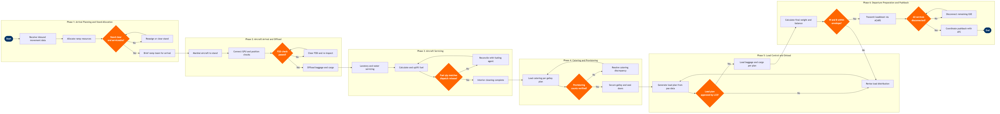

Ramp & Turnaround Operations
Ground Operations & Airport Services › Ramp & Turnaround Operations · 20 L4 steps · 6 phases · 4 decision gates · Updated 2026-10-01 21:58
📊
Process Flow Diagram (BPMN)

📋
L4 Process Steps
| Step | Step Name | Role / Swim Lane | System | Input | Output | KPI | Dec? | Exc? |
|---|---|---|---|---|---|---|---|---|
Phase 1 1.1 |
Receive inbound flight movement data | Stand Allocation Manager | SITA Airport Management System (AMS) | Inbound OOOI messages and updated ETA from ACARS | Confirmed stand assignment and estimated on-block time | Stand assignment confirmed ≥30 min before ETA | N | N |
| 1.2 | Allocate ramp resources to inbound flight | Ramp Resource Planner | Inform GroundStar | Stand assignment, aircraft type, turnaround time target | GSE allocation plan (GPU, belt loaders, pushback tug, stairs/JBs) | Resource plan published ≥20 min before on-block; GSE utilisation ≥75% | N | N |
| 1.3 | Confirm stand readiness and brief ramp team | Ramp Duty Manager | SITA Airport Management System (AMS) | Incoming stand occupancy status, previous turn clearance confirmation | Stand ready flag set; ramp crew briefed on aircraft type, turn time, and special loads | Stand cleared ≥10 min before on-block for 95% of turns | Y | Y |
Phase 2 2.1 |
Marshal aircraft to allocated stand | Marshaller / Follow-Me Driver | SITA Airport Management System (AMS) | Stand ready confirmation, aircraft taxiing signal from Tower | Aircraft parked on stand with wheel position confirmed | On-block within 2 min of scheduled on-block time for 80% of turns | N | N |
| 2.2 | Position chocks, connect GPU and air bridge | Ground Equipment Operator | Inform GroundStar | Aircraft on-block confirmation from marshaller | Chocks placed, GPU connected, aircraft on external power, air bridge docked | GPU connected within 3 min of on-block; APU off within 5 min of on-block | N | N |
| 2.3 | Conduct FOD check and open aircraft holds | Ramp Safety Agent | Inform GroundStar | Aircraft chocked and powered; airside safety clearance | FOD-clear certification logged; hold doors open and belt loaders positioned | FOD check completed within 5 min of chocking; zero FOD incidents per 10,000 turns | Y | Y |
| 2.4 | Offload passenger baggage and ULDs | Ramp Agent | SITA LoadPlanner | Offload sequence from LoadPlanner; ULD manifest from originating station | All baggage and ULDs offloaded and sorted to arrivals belt or transfer make-up area | First bag on belt ≤20 min after on-block; last bag ≤35 min for narrow-body | N | Y |
| 2.5 | Offload cargo and mail per cargo manifest | Cargo Ramp Agent | SITA LoadPlanner | Cargo manifest (AWBs, special load codes), ULD positions from LoadPlanner | Cargo offloaded to bonded shed or transfer unit; DG and live animal loads handled per IATA DGR | Cargo offload complete within 30 min of on-block; 100% DG loads documented per IATA DGR | N | Y |
Phase 3 3.1 |
Perform lavatory and potable water servicing | Ground Service Agent | Inform GroundStar | Aircraft offload complete signal; lavatory service task assigned in GroundStar | Lavatory tanks emptied and rinsed; potable water tank filled to required level | Lavatory service complete within 15 min of task start; zero potable water contamination events | N | N |
| 3.2 | Calculate and uplift fuel per dispatch release | Fueling Agent | Into-Plane Fuel Management System | Fuel uplift order from dispatch release (Jeppesen FliteDeck / NAVBLUE); aircraft fuel gauges | Fuel uplifted to required quantity; fuel receipt signed and data transmitted | Fueling complete ≥15 min before scheduled departure; fuel quantity variance ≤50 kg vs. dispatch order | Y | Y |
| 3.3 | Complete aircraft interior cleaning | Cabin Cleaning Crew Supervisor | Inform GroundStar | Cabin cleaning task released in GroundStar after passenger deplane confirmed | Cabin cleaned, seat pockets restocked, galleys reset; cleaning sign-off in GroundStar | Cleaning complete within allocated turn time window; cabin cleanliness score ≥4.2/5 in post-flight survey | N | N |
Phase 4 4.1 |
Load catering and provisioning per galley plan | Catering Supervisor | Inform GroundStar | Catering uplift order from catering management system; galley configuration file | All trolleys and supplies loaded to correct galley positions; catering doors secured | Catering loading complete ≥20 min before STD; zero missing trolley events per 1,000 turns | Y | Y |
| 4.2 | Verify catering counts against flight specification | Load Controller | Inform GroundStar | Catering delivery notes; passenger load forecast from Amadeus Altéa PSS | Catering verification sign-off; discrepancy report raised if counts mismatch | Catering verification complete within 5 min of loading; discrepancy rate <0.5% of turns | N | Y |
Phase 5 5.1 |
Receive final pax load and generate load plan | Load Controller | SITA LoadPlanner | Final check-in closure data from Amadeus Altéa PSS; baggage weight data; cargo manifest | Load instruction report (LIR) with ULD build plan and position assignments | Load plan generated ≤10 min after check-in closure; load factor accuracy ±1% of actual | N | Y |
| 5.2 | Load passenger baggage per approved load plan | Ramp Agent | SITA LoadPlanner | Approved LIR with ULD positions and weight targets per hold zone | Baggage loaded and locked in correct positions; actual weights per hold recorded in LoadPlanner | Baggage loaded per plan with ≤2% position deviation; loading complete ≥15 min before STD | N | Y |
| 5.3 | Load outbound cargo and mail per manifest | Cargo Ramp Agent | SITA LoadPlanner | Cargo manifest (AWBs); DG declarations; ULD build instructions from LoadPlanner | Cargo loaded per IATA ULD regulations; high-value and DG loads segregated and documented | Cargo loading complete ≥20 min before STD; 100% DG segregation compliance per IATA DGR | N | Y |
Phase 6 6.1 |
Calculate final weight and balance | Load Controller | SITA LoadPlanner | Final pax count and weights, actual baggage and cargo weights, fuel uplift confirmation | Final loadsheet with ZFW, TOW, CG% MAC, and trim setting | Loadsheet issued ≥10 min before STD; CG within certified envelope 100% of departures | N | Y |
| 6.2 | Transmit loadsheet to flight crew via ACARS | Load Controller | Telex / SITA ACARS | Approved final loadsheet from SITA LoadPlanner | Loadsheet transmitted and acknowledged by flight deck; printed copy retained per regulatory requirement | ACARS loadsheet transmission ≥8 min before STD; crew acknowledgement within 2 min | N | Y |
| 6.3 | Disconnect all GSE and confirm all-clear | Ground Equipment Operator | Inform GroundStar | Doors-closed signal from cabin crew; loadsheet acknowledgement from flight deck | GPU disconnected, chocks removed, all GSE clear of aircraft; all-clear signal given to flight deck | All GSE cleared ≥3 min before off-block; zero FOD events during pushback phase | N | Y |
| 6.4 | Coordinate pushback and engine start with ATC | Pushback Supervisor | Telex / SITA ACARS | All-clear confirmed; ATIS and pushback clearance from ATC via VHF | Aircraft pushed back to runway heading; engine start sequence complete; pushback crew clear | Off-block within 1 min of target off-block time (TOBT) for 78% of departures | N | Y |
📋